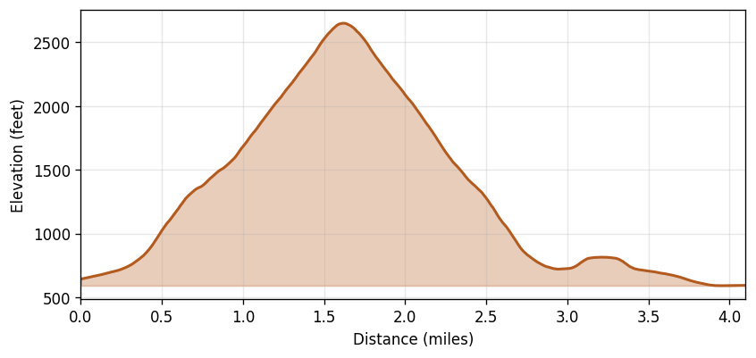

Mount Storm King
Region: Olympic National Park, WA
Date: 2021-08-28 (11:31–16:06 PDT)
Distance: 4.10 miles
Gain: 2,100 feet
Duration: 4h 34m (2h 41m moving, 1h 53m stopped)
Avg speed: 1.53 mph moving / 0.89 mph overall
Weather: Mainly clear at start, partly cloudy by the descent. Temps 63–67°F, NNW winds 2–5 mph, no precipitation.
Route
Elevation Profile
